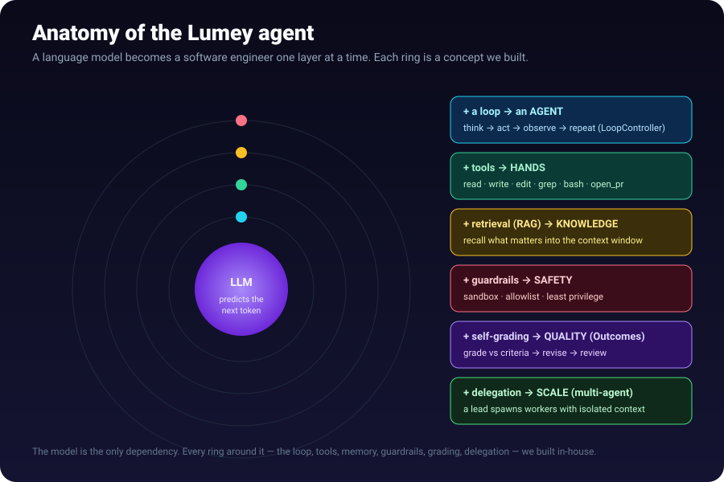

A language model becomes a software engineer one layer at a time. Each ring around the model — the loop, tools, memory, guardrails, grading, delegation — is a concept we built in-house.
1.1What is a Large Language Model?
An LLM is, at heart, a next-token predictor. You give it text; it predicts the most likely next chunk (a “token” ≈ ¾ of a word), appends it, and repeats. Everything else — “reasoning,” “coding” — is an emergent behaviour of doing that prediction extremely well.
| Term | Plain meaning | In Lumey |
|---|---|---|
| Token | ~¾ of a word; the unit models read/write | we count them to measure cost (M2.11) |
| Context window | the model’s short-term memory | the ContextEngine packs it carefully (M2.6) |
| Inference | one run of the model (prompt → output) | one ModelClient.complete() (M2.4) |
| Temperature | randomness dial (0 = deterministic) | a knob on the completion request |
1.2From a model to an agent — the loopM2.7
A raw LLM answers once and stops. An agent places the LLM inside a loop: think → act → observe → repeat. In Lumey that’s the LoopController — each iteration is one model turn; if the model asks for a tool, we run it and feed the result back; when it stops asking for tools, it’s done. Safety rails (a step ceiling + token budget) mean it can never run away.
1.3Tools & function calling — the agent’s handsM2.5
A model can’t touch your filesystem, so we give it tools: named functions with a typed schema (e.g. write_file(path, content)). When the model wants to act it emits a structured tool call; we execute it and return the result. In Lumey every action is a tool (read_file, edit_file, grep, bash, run_tests, git_commit, open_pr, delegate) — so each one is declared, validated (against a zod schema), guardable, and traced. Tool failures are data the model recovers from, not crashes.
1.4RAG — Retrieval-Augmented Generation (giving the model knowledge)M2.16 · M2.19
The model is frozen and forgetful. RAG fixes that: before generating, you retrieve the relevant facts (past runs, docs, code) and augment the prompt with them, so the model answers grounded in your data.
Two ways to “retrieve”: recency/keyword (grab recent/matching rows — simple) and semantic (turn text into an embedding vector capturing meaning, then find the closest vectors by cosine similarity — finds relevant facts even when the words differ).
How Lumey does it: cross-run memory (M2.16) records what each run learned and recalls it into the system prompt. M2.19 made recall semantic — ranked by cosine similarity of local embeddings (nomic-embed-text via Ollama, 768-dim) to the task. Verified live:
1.5Context engineering — where the cost is wonM2.6
The context window is finite and you pay per token, every turn. The ContextEngine owns three levers: prefix-stable assembly (keep the opening bytes identical so caches reuse them), context editing (clip a giant tool result), and compaction (summarize old turns when the budget is hit).
1.6Guardrails & sandboxing — safety by constructionM2.5
Sandbox: the agent works in an isolated git worktree, every path forced inside the workspace (no ../../etc/passwd), every command timed + output-capped + shell-free. Guardrails: a server-side gate on bash — a denylist (sudo, rm -rf, fork bombs, curl … | sh) that always wins, over an allowlist of binaries. This is least privilege: exactly the blast radius needed, no more.
1.7Outcomes — the agent checks its own workM2.17
A naïve agent declares “done” even when wrong. Outcomes adds self-grading: when the agent thinks it’s finished, it grades the result against the acceptance criteria; on a fail it revises — looping until it passes or a budget is spent.
1.8Multi-agent — scale through delegationM2.18
For big or parallelizable work, a lead agent delegates a focused sub-objective to a worker — the orchestrator-worker (hub-and-spoke) pattern. The make-or-break detail (from the research): context isolation. Each worker gets its own clean context window — not a shared one — but the same sandbox, so workers coordinate through the filesystem (like engineers on a branch), never by polluting each other’s context.
1.9The SDK — the typed front doorM3.1 · M3.2
An SDK is the typed client other programs use to talk to the platform. Lumey’s is schema-first: the contract is declared once (as zod schemas), and both a TypeScript client and a generated Python client come from it — so they can’t drift. Typed errors, idempotent writes, resilient transport, and a drift test that fails CI if client and contract disagree.
Pass 2 — How we built it
The whole runtime is built in-house, from scratch, with no external agent SDK, behind two stable seams (interfaces) that make everything swappable:
RuntimeAdapterseam — the firewall between the platform and whatever executes a run (areferencesimulator + ournativeloop). Swapping runtimes is “write an adapter,” never “rewrite the platform.”ModelClientseam — the firewall between the runtime and the model. One HTTP client speaks the OpenAI-compatible wire format, pointed (by our hard rule) at local models only.
| Part | Concept it embodies | Module |
|---|---|---|
| 🧠 ModelClient | inference | runtime/model/ |
| 🔧 ToolRunner + Sandbox | tools + safety | runtime/tools/, runtime/sandbox/ |
| 📑 ContextEngine | context + RAG | runtime/context/ |
| ♻️ LoopController | the loop + Outcomes | runtime/loop/ |
| 🤝 delegate tool | multi-agent | runtime/tools/delegate.ts |
Pass 3 — Research & decisions
Two honest modes
1) Apply known patterns for settled problems (retry client, git sandbox, schema-first codegen) — fast, low-risk. 2) Research first for contested topics — we did this for multi-agent, reading the orchestration survey and the context-pollution finding (a flat shared context collapses steering accuracy ~60%→21% as workers scale), which is why our workers get isolated context. We tell you which mode each piece used.
The big decisions
| Decision | Why |
|---|---|
| Build the runtime in-house | own the loop = own the moat; no vendor can deprecate/reprice us |
Behind a RuntimeAdapter seam | native is just one more adapter — low-risk in-house build |
| Local models only | sovereign-AI / on-prem / air-gap is the product wedge |
| Everything is a tool | uniform audit / guardrail / trace for every action |
| Schema-first SDK | one contract → TS + Python, zero drift |
MoSCoW — how we scope every milestone
Every milestone is scoped Must / Should / Could / Won’t so we ship the right slice and never gold-plate. Each module doc carries a Scope (MoSCoW) block — it’s how a reviewer instantly sees what a change does and does not do.
Pass 4 — The journey (lessons)
- Start lean. We removed ~140 files & 40+ DB models to strip to the agentic core before adding anything.
- Green at every commit. 1110 backend + 39 SDK tests, zero dead code, enforced continuously.
- Seams pay off later. Building the firewalls first meant lighting up a real local model was a one-line config change.
- The live run taught the most. We watched the Outcomes loop self-correct (FAIL→revise→PASS), learned that small models narrate tool use, and that a local 7B’s cold-load (~30–60s) needed a bigger timeout.
- Document as you go. Every module has a doc; the whole path lives in the CHANGELOG.